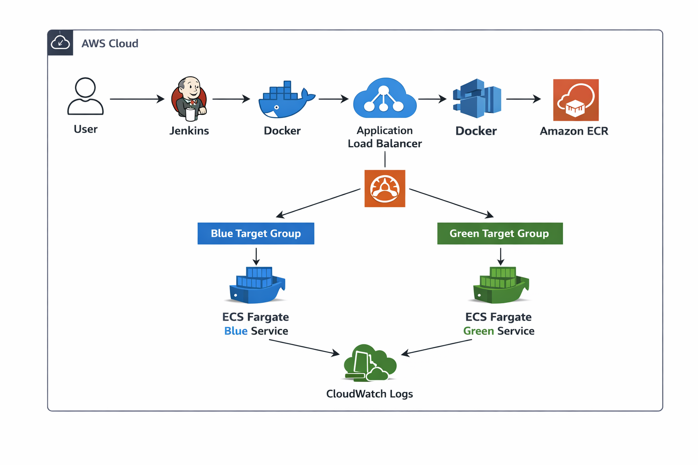

Manual infrastructure provisioning caused inconsistencies and slow deployments.
Built an automated CI/CD pipeline using Terraform and Jenkins to deploy containerized applications on AWS ECS.
Architecture Diagram
